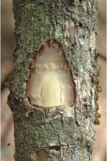
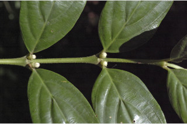
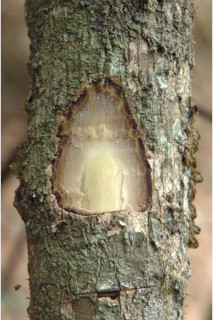
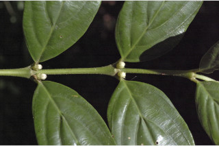

Images :
 





| Habit : | Large shrubs or small trees up to 5 m tall. |
| Leaves : | Leaves simple , opposite , decussate ; stipule small, triangular, interpetiolar , persistent ; petiole 0.7 cm long, planoconvex in cross section, glabrous ; lamina 6 x 2.5 cm, elliptic-oblong to obovate , apex abruptly acuminate with mucronate tip, base acute , margin entire , subcoriaceous , glabrous ; midrib slightly raised or flat above; secondary_nerves 3-4 pairs; tertiary_nerves horizontally closely percurrent . |
| Inflorescence / Flower : | N/A |
| Fruit and Seed : | N/A |